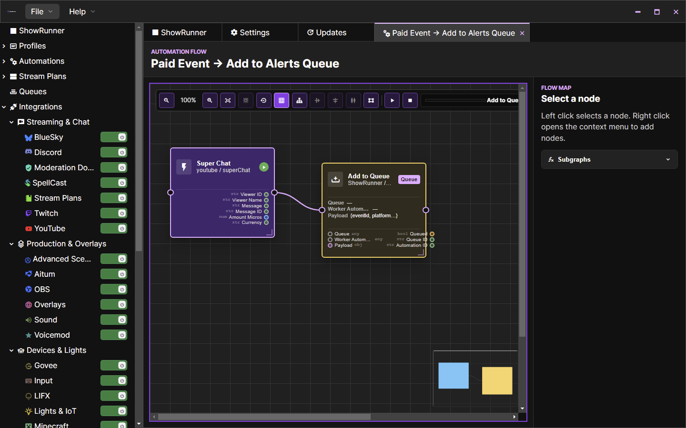
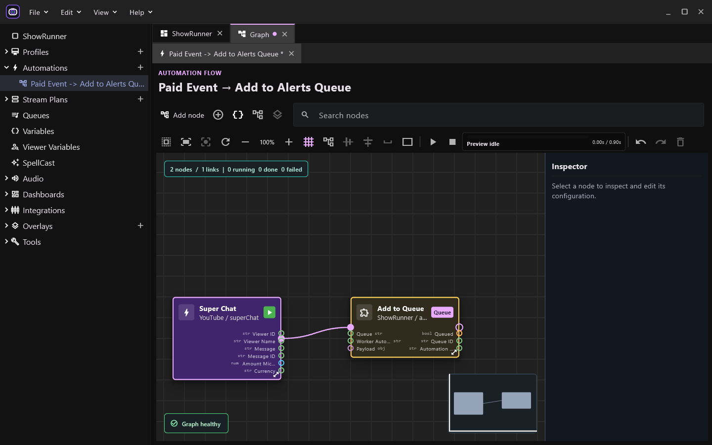
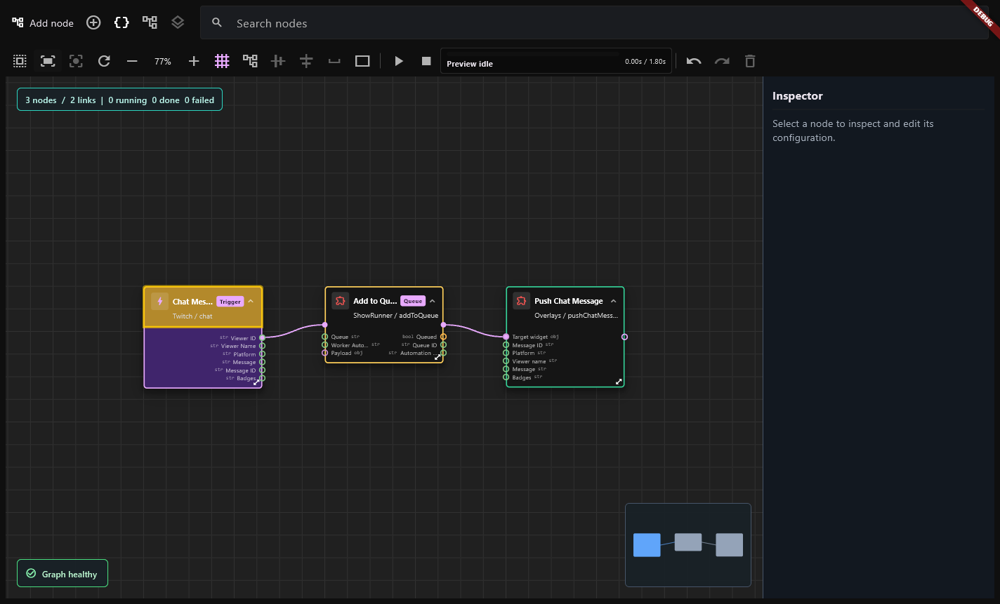

Graph editor: revenire spre aspectul Electron
Referința istorică este captura existentă din repository, verificată împreună cu sursele Vue. Capturile Flutter sunt produse de aplicația nativă Windows. Layoutul aplicației și datele fixture-urilor diferă; comparația urmărește cardurile, conectorii și feedbackul vizual, fără a pretinde identitate pixel cu pixel.

Referința Electron: card unitar, subtitlu sub titlu, fundal violet pentru trigger și auriu discret pentru coadă, fire de execuție roz.

Flutter actualizat: aceeași grupare titlu/subtitlu și paletă pe tip de nod. Porturile sunt măsurate și redesenate după încărcarea documentului, înainte de interacțiune.
Ce s-a schimbat
| Element | Flutter anterior | Flutter actualizat |
|---|
| Card | Antet cu efecte separate; unele culori diferite de referință | Card unitar, rază 6, contur 2, fundaluri pe tipul nodului |
| Titlu și subtitlu | Rânduri separate, spațiu consumat de badge și collapse | Grupate lângă icon; collapse/expand rămâne în meniul contextual |
| Conectori | Aceeași dimensiune și grosime pentru flow și date | Flow mai mare, fir 2.5; date mai mici, fir 2; selecție aurie 3.5 |
| Căutare | Primul antet putea apărea galben fără interogare | Evidențiere numai pentru căutare activă; restul cardurilor se estompează |
| Execuție | Feedback concentrat în antet | Conturul întregului card: puls albastru 800 ms, verde pentru succes, roșu pentru eroare; respectă reduced motion |
| Muchii după încărcare | Uneori rămâneau în cache la colțul nodului | Geometrie sincronizată după layout, cu invalidarea desenării și hit testing-ului |
Captura Flutter dinaintea ajustărilor (fixture cu trei noduri)

Stări de execuție
Aceste imagini verifică proiecția stărilor pe canvas. Sunt stări simulate de test, separate de execuțiile funcționale HTTP/OBS locale. Două capturi consecutive ale conturului în rulare au diferențe de pixeli, confirmând animația.
Unele detalii rămân specifice Flutter/sai_nodes: randarea fonturilor, mânerele de redimensionare, selecția porturilor și aspectul shell-ului. Sursa de referință nu a fost modificată.
Teste funcționale și configurația conexiunilor